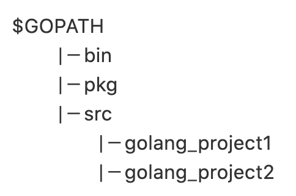

Go install
Golang Layout
GOPATH為工作環境資料夾，所以以此資料夾下的src為主資料夾新增project，通常資料夾結構如以下

Mac
- 直接下載pkg一鍵到底裝一裝
- 開啟terminal: go env 確認是否安裝成功
- 看GOPATH位置是否確實有該資料夾 如無則新增
- GOPATH通常會是在~/go (但可修改)
- HOME資料夾下的 .bash_profile修改
-
export GOPATH=~/go
PATH=$PATH:$GOPATH/bin
export GO111MODULE="on" (option)
- 最後記得開啟終端機吃到最新設定：source ~/.bash_profile
Linux
- 打開終端機下指令 tar -C /usr/local -xzf go1.14.2.linux-amd64.tar.gz
- 修改$HOME/.profile
- 新增export PATH=$PATH:/usr/local/go/bin
export GO111MODULE="on" (option)
最後一樣source 修改檔案更新設定 -
Goland
Go Module功能可在Setting設定 Runtime參數則要另外在Edit Configuration >> Environment新增 -
Visual Studio
搜尋Go並安裝 開啟Comand Palette 輸入 Go: Install/Update tools 全選執行
Setting json檔可新增其他功能
ex:存檔時排版
Launch json可設定環境變數 "configurations": [ { "env": { "REDIS_HOST": "127.0.0.1:6379" }, } ]